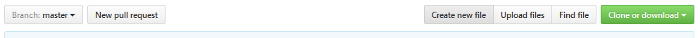
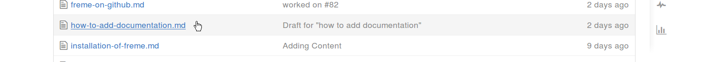
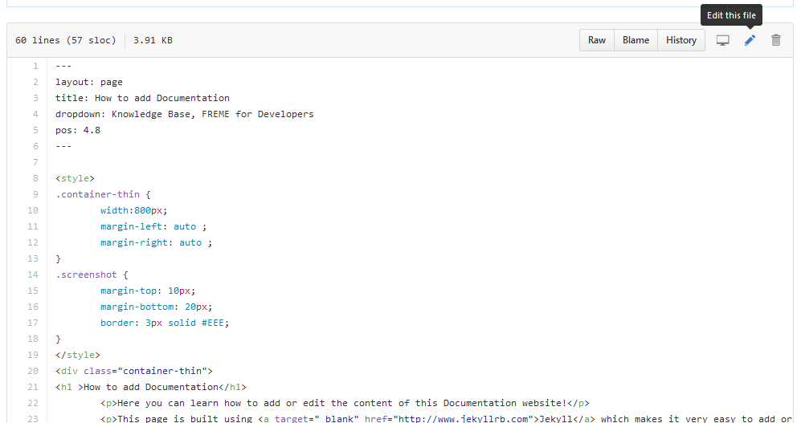

Here you can learn how to add or edit the content of this Documentation website!
This page is built using Jekyll which makes it very easy to add or edit content.
To get started, visit our Documentation's GitHub page.
By default, all files in all folders of the freme-project.github.io repository are processed by Jekyll and moved into the destination _site folder, except if it starts with an underscore, like _includes for instance.
So you can easily create a new page by adding a file to the repository.
To do so, click on the "Create new file" button at the top

To edit a file, click on the file name and then "Edit this file"


All pages which are supposed to appear in dropdown boxes (e.g. this page appears in "Knowledge Base") belong in a specified folder.
This example takes you through the structure of how a Documentation File should look
---
layout: page
title: How to add Documentation
dropdown: Knowledge Base
pos: 4.5
---
<h1> How to add Documentation</h1>
<p> Here you can learn how to add or edit the content of this Documentation website!</p>
<p> If you use HTML, any valid HTML tags will be rendered correctly! </p>
<img width="400" height="790" src="../../img/screenshot_pages.png">
<p> You can also use Markdown</p>
Every Documentation file starts with the Front Matter YAML. It is enclosed by two triple-dashed lines.
The Front Matter YAML contains metadata on how this page is supposed to be rendered.
The layout attribute determines the basic layout for rendering the page. For a basic page like this one, use layout: page. Any HTML layout specified in the /_layouts directory is valid.
The title attribute determines the title of a page in the navigation bar.
The dropdown attribute determines Name of the dropdown. If you want multi-level dropdowns, give all dropdown names, seperated by a comma.
The pos attribute determines the position of this page in the navigation bar. The position must be given, otherwise the page will not be shown. The position ascends from left to right in the navigation bar. Pages in a dropdown should all share the same number before the decimal - their position can be specified with what comes after the decimal.
Further possible customization options with the Front Matter YAML are documented in the Jekyll Documentation
After the Front Matter YAML you can get started with your content. Any valid HTML or Markdown will be rendered correctly. Just save HTML files with .html ending and markdown files with .md ending.